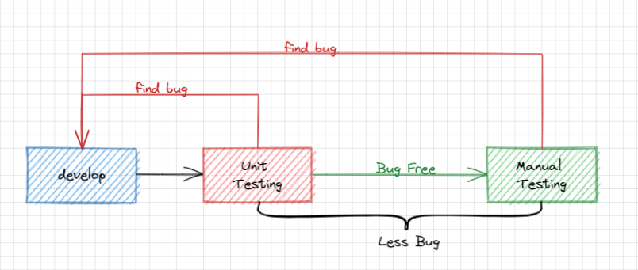

画图一直是我的弱项。也可能单纯是想得不够多，不够清晰，想好才能画好。
思路也许需要较长的时间去培养，但是技巧和工具可以通过练习快速掌握。最近发现了一个很不错的画图工具 - excalidraw
在阅读 《Jest实践指南》 一书时，发现它的配图非常好看。
比如：
于是好奇搜了下，找到了标题所述的工具。地址：https://excalidraw.com/
甚至，这个工具是开源的，你甚至可以把源代码拿来进行私有化部署。比如在公司等商业化场景下使用时，出于数据安全方面的考虑。如果觉得维护较麻烦，也可以购买其提供的增值服务。
有了工具后就可以开始练习了，可以先试试临摹。
很快就能画出一张看起来还不错的图：

一些复杂图片还可以在素材图中寻找，整体的操作也比较简单，对齐的话用网格简单对一下，反正是手绘风格，不会有对齐强迫症的存在。（PS：手绘风格和手绘看似相似，我自己拿笔画了下发现，手绘要好看，那是真的难）
以及原图中，中文字体没有处理过，还是标准的电脑体，看起来有点违和，网上可以搜下更换字体的办法。
好的分享到此结束。
PS：Jest实践指南也是一本很不错的书，推荐看看，尤其同意它关于单测意义部分的描述。